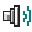

MASTER VOLUME
%1.0×
OUTPUTOFFLINE
−∞−120 dB
Boost works best on quiet audio. Start at 100%.
Connect a tab to start. Your other tabs keep their own volume.

Sound Enhancer 98Connect a tab to start. Your other tabs keep their own volume.
Different websites. Different volume.
Saved settings are restored when you connect a tab on that website. Each connected tab has its own mixer.
Open a website, click the extension in your toolbar, and choose Connect this tab. Repeat for another tab to mix them separately.
Switch between connected tabs using the audio source menu.